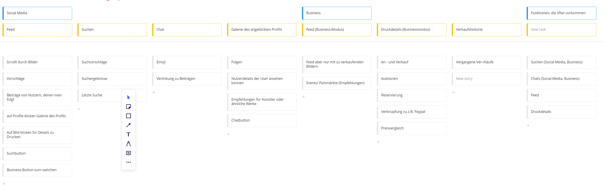
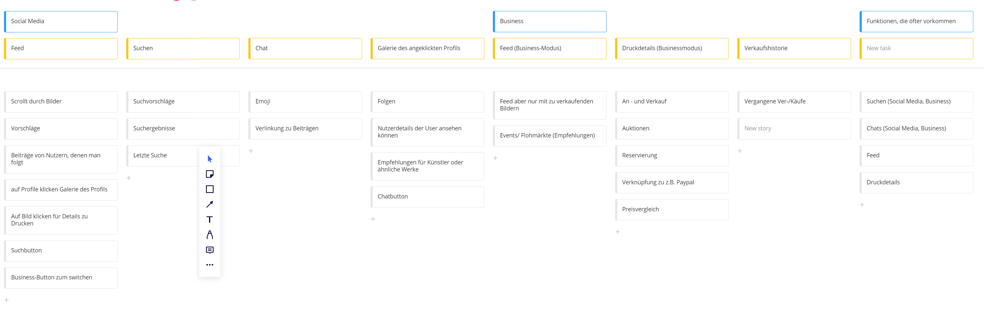

Druckgesellschaft
Project language
german
Client
university project
Year
03.2021 – 07.2021
In a nutshell
Druckgesellschaft is a prototype of a website to organize and buy prints on, developed for a university project by a team comprised of two communication design students from Hochschule Mannheim.
Process
Personas
First of all we took a deep dive into the world of graphic prints: What types exist? How to classify? Where to buy etc. Based on this research, we created 3 different and diverse personas.
User Story Map
With these three individuals in mind, we started with the user story map. We brainstormed and collected every needed feature and every stage a user has to go through in great detail. This led to the separation into three areas: Own Gallery, Feed and the Business Mode.
 

Design Sketches
After that we sketched some possible designs for different areas of the website out. Visual brainstorming.


Prototyping rough
The real design phase started off with prototyping in Figma. We began with a rough, blocky version before moving on to the clean final version.
Prototyping clean
The clean version was inspired by marble and should come across as classy and calm.
Usability Tests
We did seven usability tests in total in two waves of four and three. The tests consisted of three tasks each the user had to fulfill without any help from us. After each wave we improved our prototype accordingly.
A test could have looked like this:
- Log in, upload a print and filter your gallery
- Find the gallery of a different user
- Change to the business mode and buy a print
One crucial result was that no one understood how to use the business mode, so we discarded it.
Result
Retrospective
A big thing I’ve learned through this whole progress is that you shouldn’t just run with your first idea that comes to mind. It might seem totally plausible to you, but the product isn’t for you at the end. The future users need to be able to easily understand the UI and the features. Another important thing is that you can’t test enough. After every round of usability tests, new problematic aspects were discovered. And yes, there’s no shame in admitting that!